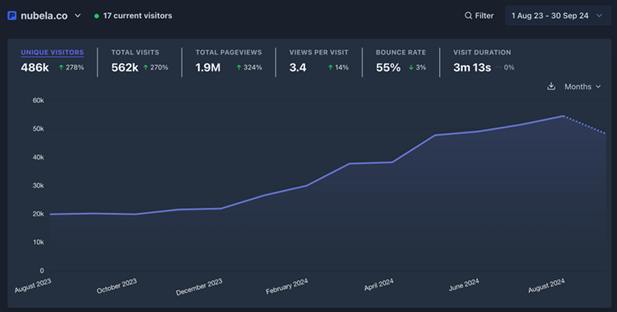
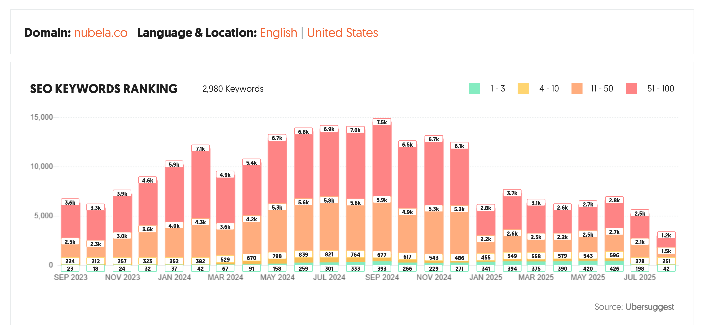

The Challenge: An Invisible Product
Proxycurl had a powerful, developer-centric API for sourcing professional contact data. However, their market presence was minimal. Their existing content was sparse, lacked SEO focus, and failed to communicate the product's value to either technical or business audiences.
They faced a critical business problem: a best-in-class product that was effectively invisible to its target market. The core challenges were:
- No Organic Visibility: The company wasn't ranking for high-volume keywords like "reverse email lookup" (14,800 monthly volume) or high-intent terms like "linkedin data scraper".
- Poor Developer Onboarding: Unclear documentation and a lack of tutorials created friction for new users, increasing time-to-value and churn.
- Weak Competitive Positioning: They struggled to differentiate themselves from larger, more established players in the data enrichment space.
The Solution: A Three-Pillar Content Strategy
I was brought on to build and execute a content strategy from the ground up. The goal was to establish Proxycurl as the definitive authority in its niche. My approach was built on three pillars:
- Foundational SEO & Keyword Strategy: We started by identifying high-intent, low-competition keywords that developers and decision-makers use when searching for data solutions. This involved deep competitor analysis and mapping search intent to different stages of the buyer's journey.
- High-Intent Content Creation: With a clear roadmap, I produced a steady stream of over 30 long-form, technical articles. Each piece was engineered to rank on Google while providing immense value, including comprehensive "Best of" guides, technical tutorials with code examples, and thought leadership articles.
- Developer-Focused Education: Beyond acquisition, the content was designed to improve activation and retention. I created clear, practical guides and documentation that reduced the friction of using the API, improving the developer experience and freeing up the support team.
The Results: Market Authority and Explosive Growth
Over 15 months, the content strategy transformed Proxycurl's organic presence. This success was concentrated in their primary target market, with over 3,200 of their top pages by traffic originating in the United States.

The strategy was particularly effective at capturing high-intent traffic by dominating search results. We secured top positions for both high-volume informational keywords and high-intent commercial keywords.
Example SEO Wins
| Keyword | Monthly Volume | Position |
|---|---|---|
| linkedin data scraper | 720 | 1 |
| contact enrichment api | 50 | 1 |
| clearbit competitors | 110 | 5 |
| reverse email lookup | 14,800 | 9 |
| firmographic | 2,400 | 9 |

The impact went beyond traffic. The content became a core business asset that:
- Drove Qualified Leads: The growth in organic traffic led to a consistent and predictable flow of high-quality sign-ups.
- Improved Developer Onboarding: Clear tutorials and documentation reduced support tickets and helped users achieve their goals faster.
- Dominated Competitive Keywords: Our comparison articles secured top-3 rankings for over 333 lucrative keywords, capturing traffic that previously went to competitors.
Note: I left Proxycurl in October of 2024, and they ended up closing down at the end of that year due to a lawsuit received from LinkedIn. As a result, some content was edited/abandonded, and many of the rankings have fallen from their peak.
Data-Driven Content Highlights
Below are a few examples from my portfolio that demonstrate the strategy in action.
Comparing the 13 Best Data Enrichment Tools
Learn what's the right B2B data enrichment tool for you.
Read Article →The Ultimate Guide to LinkedIn X-Ray Searches
A definitive guide to searching for and extracting LinkedIn profiles at scale with X-ray searches.
Read Article →Comparing the 13 Best Data Enrichment Tools
A thorough comparison of the 13 best data enrichment tools currently available in 2024.
Read Article →The Top 5 Reverse Email Lookup Tools of 2024
Explore the top reverse email lookup tools, linked to a free tool page that ranked highly and generated qualified leads.
Read Article →How to Automate Cold Calling Lead Generation
Learn how to programmatically find and enrich prospects with accurate contact information for cold calling campaigns.
Read Article →How to Get a LinkedIn Profile's Contact Information Programmatically
A step-by-step guide to programmatically finding contact information for Professional Social Network profiles.
Read Article →LinkDB: A Comprehensive LinkedIn Dataset
Skip web scraping and proxies. Access over 485 million LinkedIn profiles with LinkDB.
Read Article →How to Automate LinkedIn Messaging (Without API)
Learn how to programmatically message anyone on LinkedIn without requiring its messaging API.
Read Article →LinkedIn Recruiter Pricing and Tier Comparison (2024) - Lite, Professional, Corporate
Understand the functions and pricing of LinkedIn Recruiter in 2024.
Read Article →How To Search on LinkedIn Without Logging In
Learn how to search profiles on LinkedIn without logging into your own personal account.
Read Article →